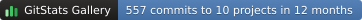

GitStats Gallery, 107 repositories · generated by gitstats 2.11.0.post1.dev12 on 2026-10-23 16:58:36
How it is counted: a commit counts here when the author’s email address is at cloudflare.com or under it, and at least two people commit from the domain. A domain says where an address is, not who paid for the work, so these are lower bounds.
| Repository | Commits (12 mo) | Commits | Addresses | First commit | Last commit |
|---|---|---|---|---|---|
| Astro | 493 | 496 | 5 | 2022-08-10 | 2026-10-21 |
| Node.js | 17 | 37 | 5 | 2024-09-18 | 2026-09-08 |
| OpenCode | 11 | 11 | 5 | 2025-12-09 | 2026-09-28 |
| SGLang | 11 | 11 | 2 | 2026-06-03 | 2026-10-09 |
| Kilo Code | 9 | 9 | 4 | 2025-12-09 | 2026-06-01 |
| Prometheus | 8 | 22 | 7 | 2017-06-20 | 2026-09-11 |
| Rust | 4 | 17 | 7 | 2018-08-31 | 2026-07-08 |
| Vite | 2 | 12 | 2 | 2024-09-11 | 2025-12-08 |
| Go | 1 | 27 | 6 | 2015-02-04 | 2026-07-23 |
| CPython | 1 | 2 | 2 | 2025-02-07 | 2026-07-21 |
| nginx | 0 | 46 | 2 | 2013-05-02 | 2016-04-11 |
| Kubernetes | 0 | 3 | 2 | 2023-01-11 | 2024-04-22 |
For a README or an open source program’s page. It is made again with the portfolio, so it stays current. A shields.io endpoint is next to it, for badges in other styles.

[](https://shenxianpeng.dev/gitstats/gallery/orgs/cloudflare.com.html)